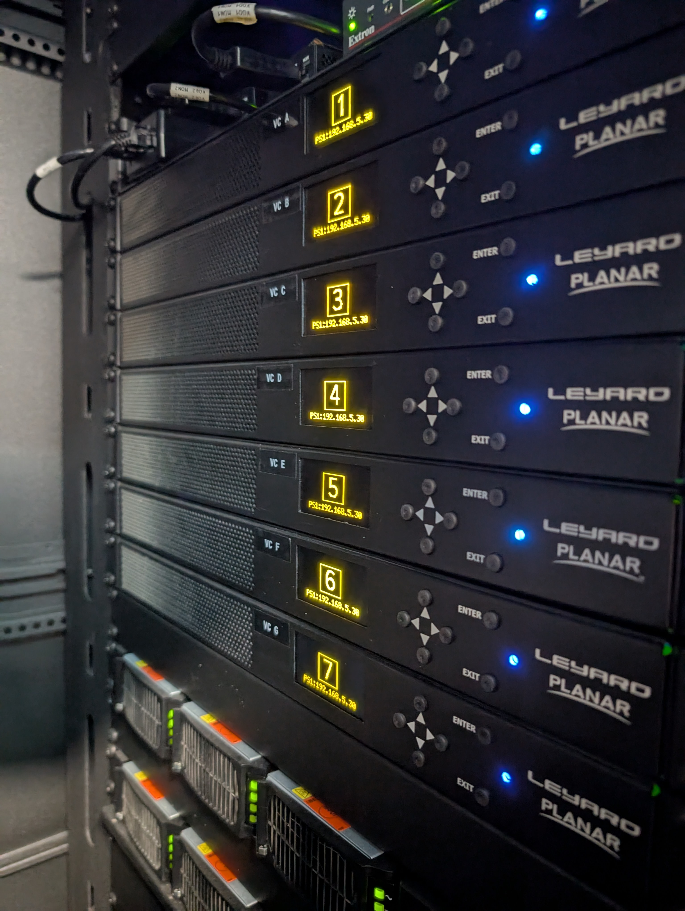
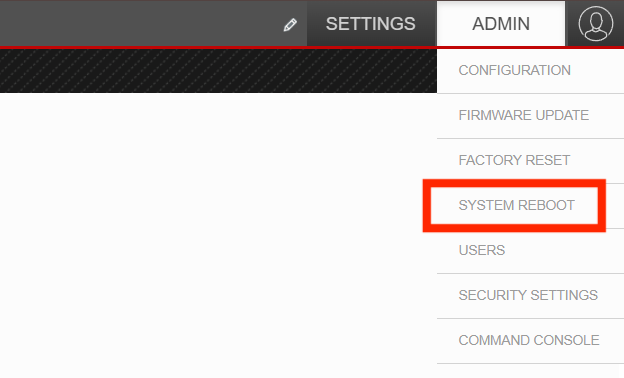

Display issues
Portions of the VizLab screen are black!
This error comes about when one or more of the zones managed by the seven video controllers fall out of sync with the rest of the configuration. Here are multiple things to try that can solve this problem, sorted in order of conveniece:
The easiest technique that can solve this problem is using the touchscreen on the control desk to resync the different zones of the screen. To do this, touch the screen to wake it, then press the settings icon at the bottom right. Once you’re in the settings menu, press the Sync tab at the bottom.
{kind=link}
{kind=link}
You’ll be presented with 14 different zones to resync (each of the seven screen rows is divided in half to form two zones per row). Resync the zone that has gone black; the positions of the zone buttons match the corresponding zones on the screen.

If that doesn’t work, try restarting the VizLab computer. This is most easily done by pressing the Windows button in the top left, then pressing the power button and selecting ‘Restart’.
If all else fails, you can do a reboot of the video controller system (which is separate from rebooting the main VizLab computer through Windows).
To do that, we’ll use the Planar WallDirector software. The video controller system manages an IP address, and accessing the software is as simple as typing that address into a browser to connect to it. You can find the IP address on the front of each of the seven video controllers on the rack.
{kind=link}
Once you’ve entered the address, you’ll likely get warned that the connection is not private. To advance, click ‘Advanced’ then ‘Proceed to IP (unsafe)’.

You’ll then be asked to sign in to access the software. The username and password are both admin.
{kind=link}
From there, you’ll be brought to a screen that summarizes the state of the display configuration. By switching tabs in the top left, you should be able to switch between the 35 screens as well as the 14 ‘display zones’ those screens get combined into for rendering purposes. If a zone or video controller is out of sync, you’ll likely see a yellow caution symbol on the screen or zone with the software saying that either an input or output to that display is not found.
{kind=link}
{kind=link}
To fix this, you’ll want to navigate to the top left and click ‘System reboot’. The screens may take a minute to reset, each cycling through their PLANAR boot loop one or more times. With patience, the entire configuration will reset and all the screens should be working again!
{kind=link}